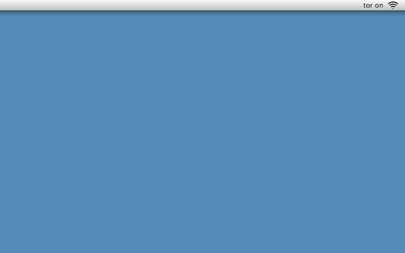

Free, open source projects
promoting voluntary interactions.
TorBar
help protect net privacy from your menu bar
Tor is free software and an open network that protects user's internet use against traffic analysis by bouncing communications
around a distributed network of relays run by volunteers all around the world.
TorBar makes contributing to the Tor network easy. It adds a menu bar item that allows you to run
a Tor relay node (not an exit node) that uses the minimum amount of bandwidth (50kbps up/down) at the click
of a button. It remembers and will only run the relay on networks you've specifically enabled it to run on.
Download
Github
